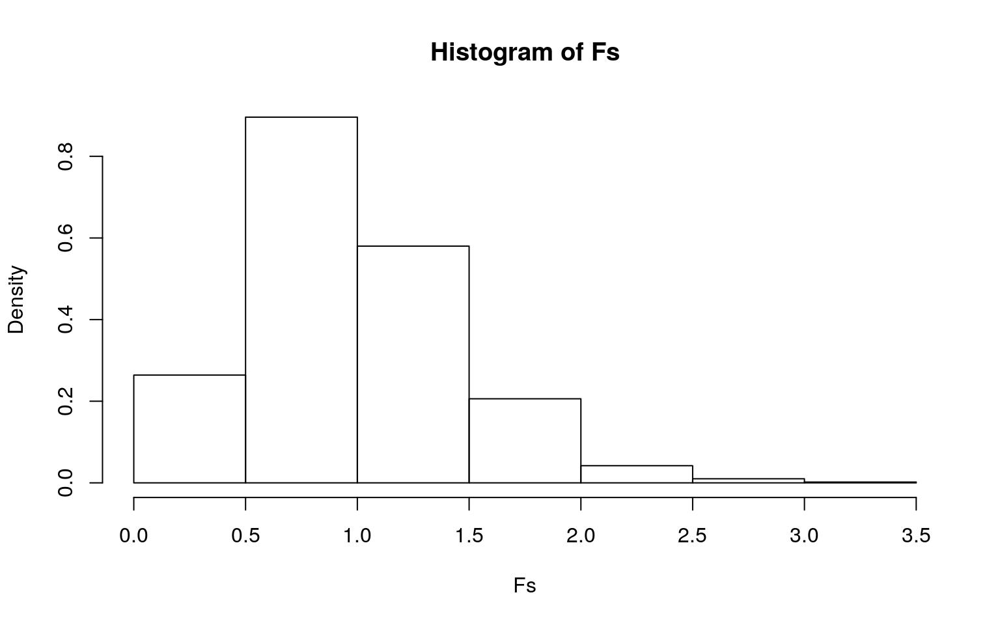
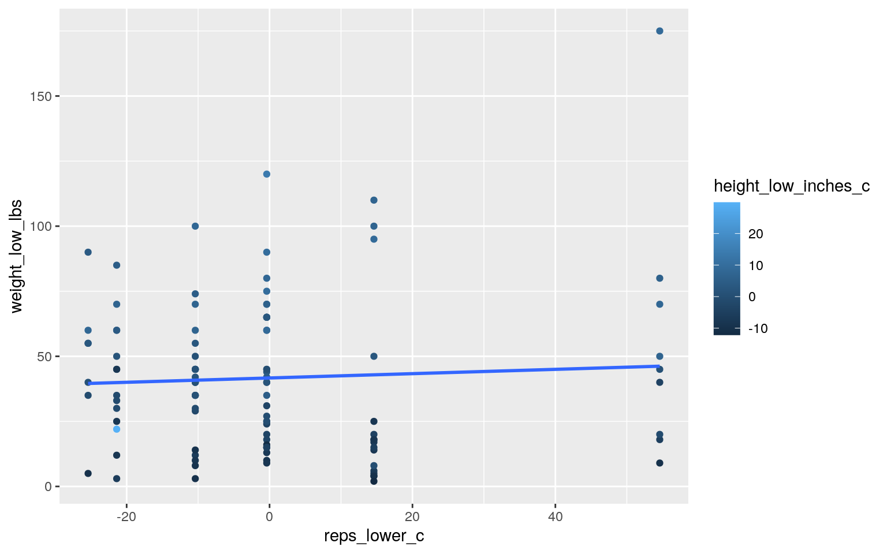
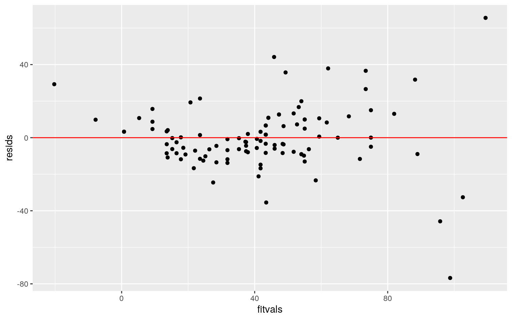
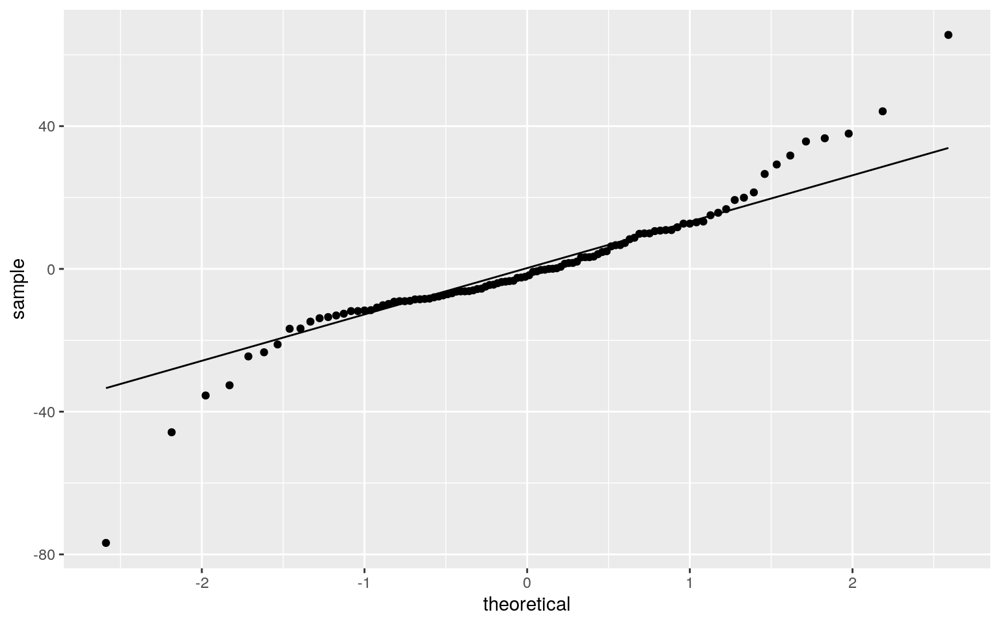
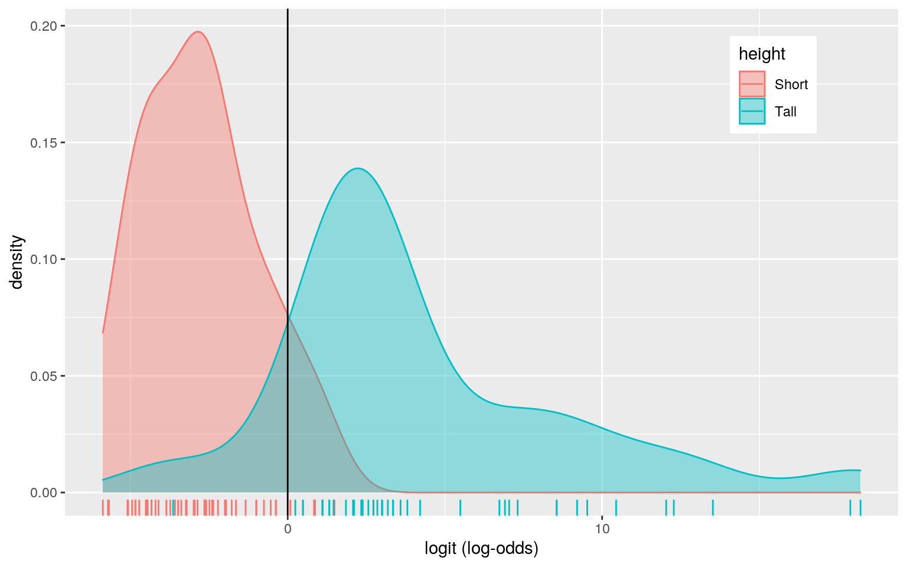
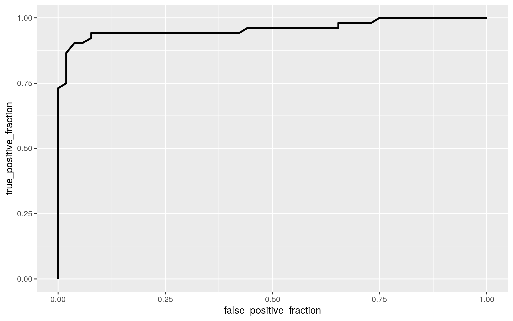

This project involves the dogs dataset, which includes certain mental and physical characteristics of numerous dog breeds. Specifically, the dataset contains variables representing the breeds ("Breed"), their intelligence level classifications ("Classification"), the upper and lower limits of repetitions necessary to understand commands ("reps_lower", "reps_upper"), and the upper and lower limits of height and weight ("height_low_inches", "height_high_inches", "weight_low_lbs", "weight_high_lbs"). In total, there are 104 observations.
library(dplyr)
library(tidyverse)
library(survival)
library(sandwich)
library(lmtest)
library(ggplot2)
library(glmnet)
library(vegan)
# Get Final Dataset (copied from project 1)
mental <- read_csv("dog_intelligence.csv")
physical <- read_csv("AKC_Breed_Info.csv")
mental <- mental %>% as.data.frame
physical <- physical %>% as.data.frame
dogs <- inner_join(mental, physical, by="Breed")
dogs <- dogs %>% slice(-c(71))
dogs <- dogs[-3]
dogs <- dogs %>% mutate(height_low_inches=as.numeric(height_low_inches), height_high_inches=as.numeric(height_high_inches), weight_low_lbs=as.numeric(weight_low_lbs), weight_high_lbs=as.numeric(weight_high_lbs))
# MANOVA
man1 <- manova(cbind(reps_lower, reps_upper) ~ Classification, data = dogs)
summary(man1)## Df Pillai approx F num Df den Df Pr(>F)
## Classification 5 2 Inf 10 196 < 2.2e-16 ***
## Residuals 98
## ---
## Signif. codes: 0 '***' 0.001 '**' 0.01 '*' 0.05 '.' 0.1
' ' 1# Univariate ANOVA
summary.aov(man1)## Response reps_lower :
## Df Sum Sq Mean Sq F value Pr(>F)
## Classification 5 43983 8796.6 2.2946e+31 < 2.2e-16 ***
## Residuals 98 0 0.0
## ---
## Signif. codes: 0 '***' 0.001 '**' 0.01 '*' 0.05 '.' 0.1
' ' 1
##
## Response reps_upper :
## Df Sum Sq Mean Sq F value Pr(>F)
## Classification 5 82182 16436 8.4648e+30 < 2.2e-16 ***
## Residuals 98 0 0
## ---
## Signif. codes: 0 '***' 0.001 '**' 0.01 '*' 0.05 '.' 0.1
' ' 1# Post-Hoc T Tests
pairwise.t.test(dogs$reps_lower, dogs$Classification, p.adj = "none")##
## Pairwise comparisons using t tests with pooled SD
##
## data: dogs$reps_lower and dogs$Classification
##
## Above Average Working Dogs
## Average Working/Obedience Intelligence <2e-16
## Brightest Dogs <2e-16
## Excellent Working Dogs <2e-16
## Fair Working/Obedience Intelligence <2e-16
## Lowest Degree of Working/Obedience Intelligence <2e-16
## Average Working/Obedience Intelligence
## Average Working/Obedience Intelligence -
## Brightest Dogs <2e-16
## Excellent Working Dogs <2e-16
## Fair Working/Obedience Intelligence <2e-16
## Lowest Degree of Working/Obedience Intelligence <2e-16
## Brightest Dogs Excellent Working Dogs
## Average Working/Obedience Intelligence - -
## Brightest Dogs - -
## Excellent Working Dogs <2e-16 -
## Fair Working/Obedience Intelligence <2e-16 <2e-16
## Lowest Degree of Working/Obedience Intelligence <2e-16
<2e-16
## Fair Working/Obedience Intelligence
## Average Working/Obedience Intelligence -
## Brightest Dogs -
## Excellent Working Dogs -
## Fair Working/Obedience Intelligence -
## Lowest Degree of Working/Obedience Intelligence <2e-16
##
## P value adjustment method: nonepairwise.t.test(dogs$reps_upper, dogs$Classification, p.adj = "none")##
## Pairwise comparisons using t tests with pooled SD
##
## data: dogs$reps_upper and dogs$Classification
##
## Above Average Working Dogs
## Average Working/Obedience Intelligence <2e-16
## Brightest Dogs <2e-16
## Excellent Working Dogs <2e-16
## Fair Working/Obedience Intelligence <2e-16
## Lowest Degree of Working/Obedience Intelligence <2e-16
## Average Working/Obedience Intelligence
## Average Working/Obedience Intelligence -
## Brightest Dogs <2e-16
## Excellent Working Dogs <2e-16
## Fair Working/Obedience Intelligence <2e-16
## Lowest Degree of Working/Obedience Intelligence <2e-16
## Brightest Dogs Excellent Working Dogs
## Average Working/Obedience Intelligence - -
## Brightest Dogs - -
## Excellent Working Dogs <2e-16 -
## Fair Working/Obedience Intelligence <2e-16 <2e-16
## Lowest Degree of Working/Obedience Intelligence <2e-16
<2e-16
## Fair Working/Obedience Intelligence
## Average Working/Obedience Intelligence -
## Brightest Dogs -
## Excellent Working Dogs -
## Fair Working/Obedience Intelligence -
## Lowest Degree of Working/Obedience Intelligence <2e-16
##
## P value adjustment method: none# Type 1 Error
1 - 0.95^30## [1] 0.7853612# Bonferroni Correction
0.05/33## [1] 0.001515152In total, I performed 33 tests (1 MANOVA, 2 ANOVA, and 33 t tests). The probability of a Type 1 error is 0.7853612. After adjusting the significance level through a Bonferroni correction, the new alpha is 0.001515152. Yet even with this new alpha, the p-values from MANOVA and both univariate ANOVAs continue to show significant differences in at least one variable (all these p-values = < 2.2e-16). Furthermore, after conducting t tests, reps_lower and reps_upper continue to show significant differences across the different classification levels. In fact, there were 30 significant differences found. The MANOVA assumptions include: random samples, independent observations, multivariate normality of dependent variables, homogeneity of within-group covariance matrices, linear relationships among dependent variables, no extreme outliers, and no multicollinearity. However, these assumptions are likely not met. For example, the lower and upper limits of height and weight are all highly linearly correlated, so the multicollinearity assumption is violated. In fact, the reason why I chose the reps_lower and reps_upper variables in the post hoc t tests is because choosing any other combination of dependent variables created an error of "rank deficiency" and didn't allow the code to run.
# PERMANOVA
library(vegan)
select <- dplyr::select
dists <- dogs %>% select(reps_lower, height_low_inches, weight_low_lbs) %>% dist()
adonis(dists ~ Classification, data = dogs)##
## Call:
## adonis(formula = dists ~ Classification, data = dogs)
##
## Permutation: free
## Number of permutations: 999
##
## Terms added sequentially (first to last)
##
## Df SumsOfSqs MeanSqs F.Model R2 Pr(>F)
## Classification 5 49076 9815.1 10.549 0.3499 0.001 ***
## Residuals 98 91180 930.4 0.6501
## Total 103 140256 1.0000
## ---
## Signif. codes: 0 '***' 0.001 '**' 0.01 '*' 0.05 '.' 0.1
' ' 1# PERMANOVA by hand
table(dogs$Classification)##
## Above Average Working Dogs Average Working/Obedience
Intelligence
## 24 33
## Brightest Dogs Excellent Working Dogs
## 7 14
## Fair Working/Obedience Intelligence Lowest Degree of
Working/Obedience Intelligence
## 17 9SST <- sum(dists^2)/104
SSW <- dogs %>% group_by(Classification) %>% select(reps_lower, height_low_inches, weight_low_lbs) %>% do(d = dist(.[-1], "euclidean")) %>% ungroup() %>% summarize(sum(d[[1]]^2)/24 + sum(d[[2]]^2)/33 +
sum(d[[3]]^2)/7 + sum(d[[4]]^2)/14 + sum(d[[5]]^2)/17 + sum(d[[6]]^2)/9) %>% pull
F_obs <- ((SST - SSW)/5)/(SSW/98)
Fs <- replicate(1000,
{
new <- dogs %>% mutate(Classification = sample(Classification))
SSW <- new %>% group_by(Classification) %>% select(reps_lower, height_low_inches, weight_low_lbs) %>% do(d = dist(.[-1], "euclidean")) %>% ungroup() %>% summarize(sum(d[[1]]^2)/24 + sum(d[[2]]^2)/33 +
sum(d[[3]]^2)/7 + sum(d[[4]]^2)/14 + sum(d[[5]]^2)/17 + sum(d[[6]]^2)/9) %>% pull
((SST - SSW)/5)/(SSW/98)
})
{
hist(Fs, prob = T)
abline(v = F_obs, col = "red", add = T)
} I conducted a PERMANOVA test on my dataset, because it doesn't require the assumptions of a MANOVA test. Null hypothesis: for reps_lower, height_low_inches, and weight_low_lbs, the means for each Classification are equal. Alternative hypothesis: for at least one of these dependent variables, at least 1 Classification mean is different. The PERMANOVA gave a p-value of 0.001, which is less than alpha=0.05, so the null hypothesis can be rejected.
set.seed(123)
data(dogs)
# Mean-Centering
dogs$reps_lower_c <- dogs$reps_lower - mean(dogs$reps_lower)
dogs$height_low_inches_c <- dogs$height_low_inches - mean(dogs$height_low_inches)
# Model
fit1 <- lm(weight_low_lbs ~ reps_lower_c * height_low_inches_c, data = dogs)
summary(fit1)##
## Call:
## lm(formula = weight_low_lbs ~ reps_lower_c *
height_low_inches_c,
## data = dogs)
##
## Residuals:
## Min 1Q Median 3Q Max
## -76.781 -8.520 -1.995 9.007 65.569
##
## Coefficients:
## Estimate Std. Error t value Pr(>|t|)
## (Intercept) 42.31514 1.77012 23.905 < 2e-16 ***
## reps_lower_c 0.12267 0.08642 1.419 0.159
## height_low_inches_c 3.34382 0.26371 12.680 < 2e-16 ***
## reps_lower_c:height_low_inches_c 0.06377 0.01261 5.058
1.92e-06 ***
## ---
## Signif. codes: 0 '***' 0.001 '**' 0.01 '*' 0.05 '.' 0.1
' ' 1
##
## Residual standard error: 18.01 on 100 degrees of freedom
## Multiple R-squared: 0.646, Adjusted R-squared: 0.6354
## F-statistic: 60.83 on 3 and 100 DF, p-value: < 2.2e-16dogs %>% ggplot(aes(x=reps_lower_c, y=weight_low_lbs, color=height_low_inches_c)) + geom_point() + geom_smooth(method="lm", se=F)
# Linearity and Homoskedasticity Assumption
resids <- fit1$residuals
fitvals <- fit1$fitted.values
ggplot() + geom_point(aes(fitvals, resids)) + geom_hline(yintercept = 0, color = "red")
# Normality Assumption
ggplot() + geom_qq(aes(sample = resids)) + geom_qq_line(aes(sample = resids))
# Robust Standard Error
coeftest(fit1, vcov = vcovHC(fit1))##
## t test of coefficients:
##
## Estimate Std. Error t value Pr(>|t|)
## (Intercept) 42.315138 2.029767 20.8473 < 2.2e-16 ***
## reps_lower_c 0.122671 0.151834 0.8079 0.4211
## height_low_inches_c 3.343816 0.808145 4.1376 7.324e-05
***
## reps_lower_c:height_low_inches_c 0.063770 0.044236
1.4416 0.1525
## ---
## Signif. codes: 0 '***' 0.001 '**' 0.01 '*' 0.05 '.' 0.1
' ' 1For every 1 unit increase in the mean lower limit of height, there is a 3.34382 increase in the lower limit of weight. The interaction between the mean lower limit of repetitions and the mean lower limit of height leads to a 0.06377 increase in the lower limit of weight. However, after recomputing the linear regression with robust standard errors, only the mean lower limit of height had a significant effect on the lower limit of weight. The proportion of the variation in the lower limit of weight this model explains is 0.646.
samp_dists <- replicate(5000,
{
boot_data <- sample_frac(dogs, replace = T)
fit1 <- lm(weight_low_lbs ~ reps_lower_c * height_low_inches_c, data = boot_data)
coef(fit1)
})
samp_dists %>% t %>% as.data.frame %>% summarize_all(sd)## (Intercept) reps_lower_c height_low_inches_c
reps_lower_c:height_low_inches_c
## 1 1.769357 0.1299496 0.5360947 0.03300017These bootstrapped standard erros are larger than the original SEs but smaller than the robust SEs.
# Make Binary Variable
dogs %>% summarize(median(height_high_inches))## median(height_high_inches)
## 1 21.5dogs <- dogs %>% mutate(height = ifelse(`height_high_inches` > 21.5,
"Tall","Short"))
dogs <- dogs %>% mutate(height_b = ifelse(height=="Tall",1,0))
# Model
fit2 <- glm(height_b ~ reps_upper + weight_high_lbs, data = dogs, family = "binomial")
summary(fit2)##
## Call:
## glm(formula = height_b ~ reps_upper + weight_high_lbs,
family = "binomial",
## data = dogs)
##
## Deviance Residuals:
## Min 1Q Median 3Q Max
## -1.83793 -0.32121 -0.03733 0.36336 2.94688
##
## Coefficients:
## Estimate Std. Error z value Pr(>|z|)
## (Intercept) -6.98912 1.57836 -4.428 9.51e-06 ***
## reps_upper 0.01618 0.01485 1.090 0.276
## weight_high_lbs 0.12414 0.02408 5.156 2.53e-07 ***
## ---
## Signif. codes: 0 '***' 0.001 '**' 0.01 '*' 0.05 '.' 0.1
' ' 1
##
## (Dispersion parameter for binomial family taken to be 1)
##
## Null deviance: 144.175 on 103 degrees of freedom
## Residual deviance: 52.682 on 101 degrees of freedom
## AIC: 58.682
##
## Number of Fisher Scoring iterations: 7exp(0.12414)## [1] 1.132174# Confusion Matrix
probs <- predict(fit2, type = "response")
table(predict = as.numeric(probs > 0.5), truth = dogs$height_b) %>%
addmargins## truth
## predict 0 1 Sum
## 0 47 3 50
## 1 5 49 54
## Sum 52 52 104class_diag <- function(probs, truth) {
tab <- table(factor(probs > 0.5, levels = c("FALSE", "TRUE")),
truth)
acc = sum(diag(tab))/sum(tab)
sens = tab[2, 2]/colSums(tab)[2]
spec = tab[1, 1]/colSums(tab)[1]
ppv = tab[2, 2]/rowSums(tab)[2]
if (is.numeric(truth) == FALSE & is.logical(truth) == FALSE)
truth <- as.numeric(truth) - 1
ord <- order(probs, decreasing = TRUE)
probs <- probs[ord]
truth <- truth[ord]
TPR = cumsum(truth)/max(1, sum(truth))
FPR = cumsum(!truth)/max(1, sum(!truth))
dup <- c(probs[-1] >= probs[-length(probs)], FALSE)
TPR <- c(0, TPR[!dup], 1)
FPR <- c(0, FPR[!dup], 1)
n <- length(TPR)
auc <- sum(((TPR[-1] + TPR[-n])/2) * (FPR[-1] - FPR[-n]))
data.frame(acc, sens, spec, ppv, auc)
}
class_diag(probs, dogs$height_b)## acc sens spec ppv auc
## 1 0.9230769 0.9423077 0.9038462 0.9074074 0.9585799# Logit Density Plot
dogs$logit <- predict(fit2, type = "link")
dogs %>% ggplot() + geom_density(aes(logit, color=height, fill= height), alpha=.4) + theme(legend.position=c(.85,.85)) + geom_vline(xintercept=0) + xlab("logit (log-odds)") + geom_rug(aes(logit,color= height))
# ROC/AUC
library(plotROC)
ROCplot <- ggplot(dogs) + geom_roc(aes(d = height_b, m = probs),
n.cuts = 0)
ROCplot
calc_auc(ROCplot)## PANEL group AUC
## 1 1 -1 0.9585799The logistic regression model shows that after controlling for the upper limit of repetitions, the upper limit of weight increases the log-odds of height. To clarify, every one-unit increase in the upper limit of weight multiplies the odds of height by 1.132174. For this model, the accuracy value is 0.9230769, the sensitivity value (true positive rate) is 0.9423077, the specificity value (true negative rate) is 0.9038462, and the precision value is 0.9074074. The AUC is 0.9585799, which can be considered great since it falls between 0.9 and 1.0. The AUC indicates that a randomly-selected tall breed has a higher probability than a randomly-selected short breed.
# Model
fit3 <- glm(height_b ~ reps_lower + reps_upper + weight_low_lbs + weight_high_lbs + height_low_inches, data = dogs, family = "binomial")
summary(fit3)##
## Call:
## glm(formula = height_b ~ reps_lower + reps_upper +
weight_low_lbs +
## weight_high_lbs + height_low_inches, family =
"binomial",
## data = dogs)
##
## Deviance Residuals:
## Min 1Q Median 3Q Max
## -1.67079 -0.18115 -0.00118 0.09292 2.51534
##
## Coefficients:
## Estimate Std. Error z value Pr(>|z|)
## (Intercept) -18.55037 5.03344 -3.685 0.000228 ***
## reps_lower -0.19556 0.10610 -1.843 0.065305 .
## reps_upper 0.18985 0.08620 2.203 0.027628 *
## weight_low_lbs 0.07463 0.10166 0.734 0.462869
## weight_high_lbs 0.07960 0.06831 1.165 0.243897
## height_low_inches 0.50275 0.22259 2.259 0.023908 *
## ---
## Signif. codes: 0 '***' 0.001 '**' 0.01 '*' 0.05 '.' 0.1
' ' 1
##
## (Dispersion parameter for binomial family taken to be 1)
##
## Null deviance: 144.175 on 103 degrees of freedom
## Residual deviance: 32.471 on 98 degrees of freedom
## AIC: 44.471
##
## Number of Fisher Scoring iterations: 8# Confusion Matrix
probab <- predict(fit3, type = "response")
table(predict = as.numeric(probab > 0.5), truth = dogs$height_b) %>%
addmargins## truth
## predict 0 1 Sum
## 0 48 3 51
## 1 4 49 53
## Sum 52 52 104class_diag <- function(probab, truth) {
tab <- table(factor(probab > 0.5, levels = c("FALSE", "TRUE")),
truth)
acc = sum(diag(tab))/sum(tab)
sens = tab[2, 2]/colSums(tab)[2]
spec = tab[1, 1]/colSums(tab)[1]
ppv = tab[2, 2]/rowSums(tab)[2]
if (is.numeric(truth) == FALSE & is.logical(truth) == FALSE)
truth <- as.numeric(truth) - 1
ord <- order(probab, decreasing = TRUE)
probab <- probab[ord]
truth <- truth[ord]
TPR = cumsum(truth)/max(1, sum(truth))
FPR = cumsum(!truth)/max(1, sum(!truth))
dup <- c(probab[-1] >= probab[-length(probab)], FALSE)
TPR <- c(0, TPR[!dup], 1)
FPR <- c(0, FPR[!dup], 1)
n <- length(TPR)
auc <- sum(((TPR[-1] + TPR[-n])/2) * (FPR[-1] - FPR[-n]))
data.frame(acc, sens, spec, ppv, auc)
}
class_diag(probab, dogs$height_b)## acc sens spec ppv auc
## 1 0.9326923 0.9423077 0.9230769 0.9245283 0.9840976# 10 Fold Cross Validation
set.seed(1234)
k = 10
data1 <- dogs[sample(nrow(dogs)), ]
folds <- cut(seq(1:nrow(dogs)), breaks = k, labels = F)
diags <- NULL
for (i in 1:k) {
train <- data1[folds != i, ]
test <- data1[folds == i, ]
truth <- test$height_b
fit4 <- glm(height_b ~ reps_lower + reps_upper + weight_low_lbs + weight_high_lbs + height_low_inches, data = train, family = "binomial")
probs1 <- predict(fit4, newdata = test, type = "response")
diags <- rbind(diags, class_diag(probs1, truth))
}
summarize_all(diags, mean)## acc sens spec ppv auc
## 1 0.9236364 0.9490476 0.91 0.902381 0.9511905# LASSO
x <- -model.matrix(fit3)
y <- as.matrix(dogs$height_b)
cv <- cv.glmnet(x, y, family = "binomial")
lasso1 <- glmnet(x, y, , family = "binomial", lambda = cv$lambda.1se)
coef(lasso1)## 7 x 1 sparse Matrix of class "dgCMatrix"
## s0
## (Intercept) -4.4875135000
## (Intercept) .
## reps_lower .
## reps_upper .
## weight_low_lbs -0.0008221957
## weight_high_lbs -0.0153227859
## height_low_inches -0.2010684542# Cross Validation from LASSO
set.seed(1234)
k = 10
data1 <- dogs[sample(nrow(dogs)), ]
folds <- cut(seq(1:nrow(dogs)), breaks = k, labels = F)
diags <- NULL
for (i in 1:k) {
train <- data1[folds != i, ]
test <- data1[folds == i, ]
truth <- test$height_b
fit5 <- glm(height_b ~ weight_low_lbs + weight_high_lbs + height_low_inches, data = train, family = "binomial")
probs2 <- predict(fit5, newdata = test, type = "response")
diags <- rbind(diags, class_diag(probs2, truth))
}
summarize_all(diags, mean)## acc sens spec ppv auc
## 1 0.9336364 0.9490476 0.9225 0.9190476 0.9486905Using all of the response variables (except height_high_inches since that was the variable used to create the binary variable), the logistic regression model created some classification diagnostics. The accuracy value is 0.9326923, the sensitivity value is 0.9423077, the specificity value is 0.9230769, and the precision value is 0.9245283. The AUC is 0.9840976, which can be considered great since it falls between 0.9 and 1.0. After conducting a 10-fold cross validation, out-of-sample classification diagnostics was created. The accuracy value is 0.9236364, the sensitivity value is 0.9490476, the specificity value is 0.91, and the precision value is 0.902381. The AUC is 0.9511905, which can be considered great since it falls between 0.9 and 1.0. However, this out-of-sample AUC value is less than the AUC of the logistic regression model with all response variables. LASSO retains the variables weight_low_lbs, weight_high_lbs, and height_low_inches. Conducting another 10-fold cross validation using these specific LASSO variables generated a final set of classification diagnostics. The accuracy value is 0.9336364, the sensitivity value is 0.9490476, the specificity value is 0.9225, and the precision value is 0.9190476. The AUC is 0.9486905, which can be considered great since it falls between 0.9 and 1.0. Ultimately, this out-of-sample AUC using the LASSO variables is smaller than both the AUC from the logistic regression model with all variables and the AUC from the out-of-sample model.